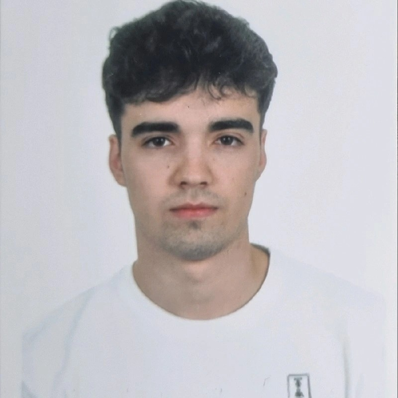

Sergio García Yugueros

Junior Full Stack Developer
Resumen Profesional
Desarrollador web con experiencia en prácticas y formación académica sólida en Ingeniería Informática. Apasionado por la programación web, el aprendizaje automático y la resolución de problemas. Competente en HTML, CSS, JavaScript y frameworks como Next.js(React). Busco contribuir al desarrollo de soluciones innovadoras y escalables.
Skills
- HTML, CSS, JavaScript, Next.js, Node.js, Java, Python, MySQL, MongoDB
Educación
- Graduado en Ingeniería Informática
Universidad de León (ULE)
Experiencia Laboral
- Becario en CDS Octubre 2024 - Diciembre 2024
Desarrollo de aplicaciones web utilizando IA y tecnologías front-end y back-end - Becario en Certitec Julio 2024 - Septiembre 2024
Uso de VS y desarrollo de software utilizando C# - Técnico en electrodomésticos en Electrodomésticos Garpa SL Junio 2021 - Actualidad
Certificaciones
- Cisco Certified Cyber Ops Associate
- Writing Efficient Python Code (DataCamp)
- Supervised Learning with scikit-learn (DataCamp)
- Introduction to Deep Learning in Python (DataCamp)
- Understanding Machine Learning (DataCamp)